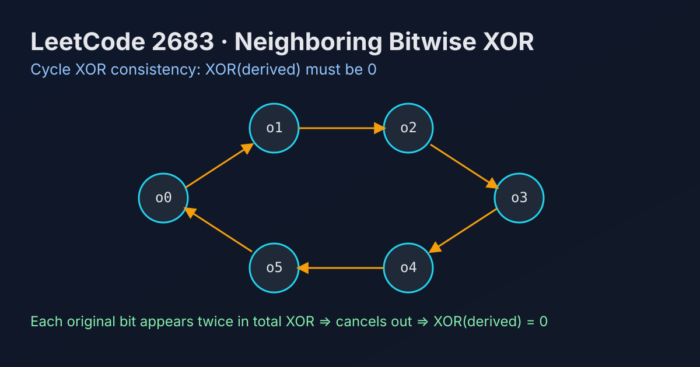

LeetCode 2683: Neighboring Bitwise XOR (Cycle XOR Consistency Check)
LeetCode 2683Bit ManipulationXOR InvariantToday we solve LeetCode 2683 - Neighboring Bitwise XOR.
Source: https://leetcode.com/problems/neighboring-bitwise-xor/

English
Problem Summary
We are given a binary array derived where derived[i] = original[i] XOR original[(i+1) % n]. Determine whether at least one binary array original can produce derived.
Key Insight
XOR all equations in the cycle:
derived[0] XOR derived[1] ... XOR derived[n-1] equals
(o0 XOR o1) XOR (o1 XOR o2) ... XOR (o(n-1) XOR o0).
Every original bit appears exactly twice and cancels out, so total XOR must be 0. This condition is also sufficient.
Brute Force and Limitations
Brute force tries both starting values (original[0]=0/1) and reconstructs the rest, then checks wrap-around consistency. It works in O(n) but is more verbose.
Optimal Algorithm Steps
1) Compute XOR of all values in derived.
2) If result is 0, return true.
3) Otherwise return false.
Complexity Analysis
Time: O(n).
Space: O(1).
Common Pitfalls
- Mistakenly requiring a unique original; the problem only asks existence.
- Forgetting the circular edge (n-1) -> 0.
- Overengineering with simulation when XOR invariant is enough.
Reference Implementations (Java / Go / C++ / Python / JavaScript)
class Solution {
public boolean doesValidArrayExist(int[] derived) {
int xor = 0;
for (int v : derived) xor ^= v;
return xor == 0;
}
}func doesValidArrayExist(derived []int) bool {
xor := 0
for _, v := range derived {
xor ^= v
}
return xor == 0
}class Solution {
public:
bool doesValidArrayExist(vector<int>& derived) {
int x = 0;
for (int v : derived) x ^= v;
return x == 0;
}
};class Solution:
def doesValidArrayExist(self, derived: List[int]) -> bool:
x = 0
for v in derived:
x ^= v
return x == 0/**
* @param {number[]} derived
* @return {boolean}
*/
var doesValidArrayExist = function(derived) {
let x = 0;
for (const v of derived) x ^= v;
return x === 0;
};中文
题目概述
给你一个二进制数组 derived，满足 derived[i] = original[i] XOR original[(i+1) % n]。判断是否存在至少一个二进制数组 original 可以生成它。
核心思路
把环上的所有等式整体异或：
derived[0] XOR derived[1] ... XOR derived[n-1]
等于 (o0 XOR o1) XOR (o1 XOR o2) ... XOR (o(n-1) XOR o0)。
每个 original 元素都出现两次并相互抵消，所以总异或必须是 0。这个条件同时也是充分条件。
基线解法与不足
基线可枚举 original[0]=0/1，线性推导其他位，再检查末尾与首位约束是否满足。复杂度同为 O(n)，但实现更繁琐。
最优算法步骤
1）遍历 derived 计算整体异或值。
2）若结果为 0 返回 true。
3）否则返回 false。
复杂度分析
时间复杂度：O(n)。
空间复杂度：O(1)。
常见陷阱
- 误以为要恢复唯一的 original；本题只需判断“是否存在”。
- 忘记数组是环，漏掉 (n-1) -> 0 的关系。
- 用过度模拟替代不变量判断，导致实现冗长。
多语言参考实现（Java / Go / C++ / Python / JavaScript）
class Solution {
public boolean doesValidArrayExist(int[] derived) {
int xor = 0;
for (int v : derived) xor ^= v;
return xor == 0;
}
}func doesValidArrayExist(derived []int) bool {
xor := 0
for _, v := range derived {
xor ^= v
}
return xor == 0
}class Solution {
public:
bool doesValidArrayExist(vector<int>& derived) {
int x = 0;
for (int v : derived) x ^= v;
return x == 0;
}
};class Solution:
def doesValidArrayExist(self, derived: List[int]) -> bool:
x = 0
for v in derived:
x ^= v
return x == 0/**
* @param {number[]} derived
* @return {boolean}
*/
var doesValidArrayExist = function(derived) {
let x = 0;
for (const v of derived) x ^= v;
return x === 0;
};
Comments